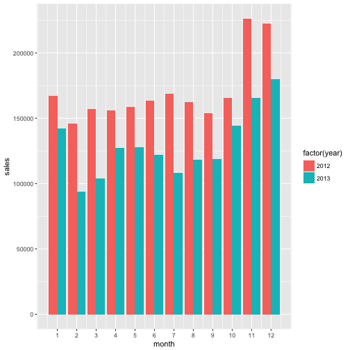

DA Homework 3
Task 0
Download the purchases.csv from the data section. This sample data contains
purchases from an online store.
Load the data into R and check whether the type of your variables are correct
(e.g. purchase_date should be of type “Date”).
## Parsed with column specification:
## cols(
## contact_id = col_integer(),
## purchase_date = col_date(format = ""),
## sales = col_double(),
## year = col_integer(),
## month = col_integer()
## )
Task 1
Plot the histogram of all the log sales.
## `stat_bin()` using `bins = 30`. Pick better value with `binwidth`.

Task 2
Plot the distributions of log sales amounts for the two years separately.
Check geom_density in the documentation of
ggplot2. Here is what you should get.

Task 3
Plot the aggregate daily sales.
Add a smoothed line to the plot (you can experiment with the span option of
geom_smooth() to control the smoothness of your line).
Default:
## `geom_smooth()` using method = 'loess' and formula 'y ~ x'

With span = 0.2:
## `geom_smooth()` using method = 'loess' and formula 'y ~ x'

Task 4
Which month brings the most sales? Plot a bar graph with aggregate sales per
month. Look at the documentation of geom_bar() to solve this. Note the labels
of the x axis (the documentation helps to reproduce).

Task 5
Recreate the previous graph by drawing the columns separately for the years (map the year variable to the fill of the bars and see the examples in the documentation to achieve side-by-side bars).

Task 6
We have seen that the aggregate sales are lower in 2013 than in 2012. Which year
has higher average sales amount? Plot a bar graph with average sales per year and
add error bars with two times the standard deviation (do not forget to adjust by the number of observations).
You can add error bars by using the geom_errorbar() function of ggplot2.
(I use the “lightblue” color to fill the bars in order to make the error bars more visible.)

Task +1
Watch this video and collect 3 positive (or negative) points about the presentation.